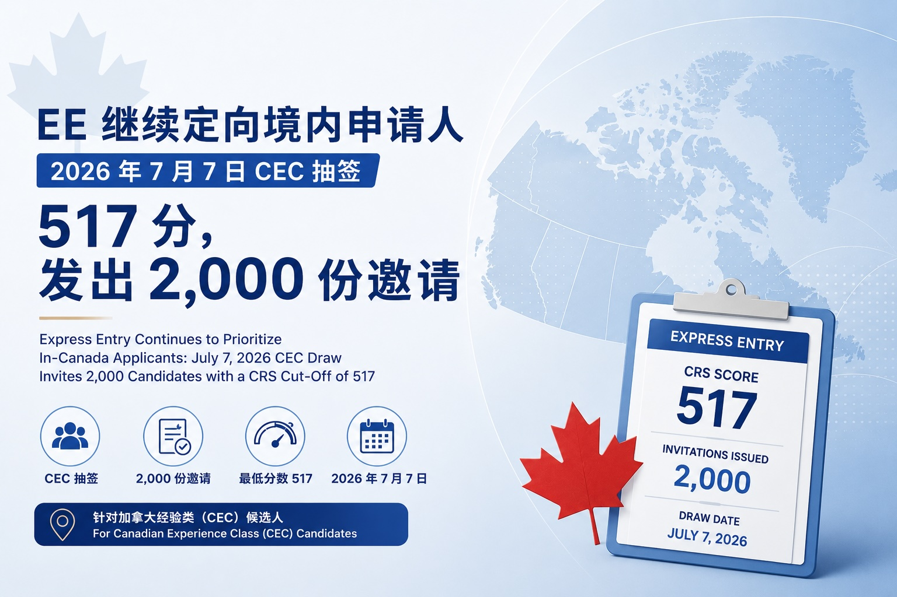

EE继续定向境内申请人：2026年7月7日 CEC 抽签517分，发出2,000份邀请
加拿大移民部（IRCC）在2026年7月7日进行了新一轮 Express Entry 快速通道抽签。本轮抽签针对 Canadian Experience Class（CEC，加拿大经验类）候选人，共发出2,000份永久居民申请邀请（ITA），最低邀请分数为 CRS 517分。
根据公开报道，本轮同分筛选时间为2025年12月29日 17:49:27 UTC。
这是继2026年7月6日 PNP 省提名类别抽签之后，IRCC 连续第二天进行 Express Entry 抽签。对于目前已经在加拿大境内学习、工作，并希望通过加拿大工作经验转永久居民身份的申请人来说，这一轮 CEC 抽签仍然释放出一个比较清晰的信号：加拿大仍在优先考虑已经在加拿大境内、具备本地工作经验、并已经参与加拿大劳动力市场的申请人。
一、本轮抽签的基本情况
本轮 Express Entry 抽签的主要信息如下：
| 抽签日期 | 2026年7月7日 |
|---|---|
| 抽签类别 | Canadian Experience Class（CEC） |
| 邀请人数 | 2,000人 |
| 最低 CRS 分数 | 517分 |
| 同分筛选时间 | 2025年12月29日 17:49:27 UTC |
与上一轮 CEC 抽签相比，本轮最低分数上升了1分，从516分上升至517分。表面上看，分数只是小幅上涨，但背后的重点并不在于这1分，而在于邀请人数的变化。
上一轮 CEC 抽签发出了4,000份邀请，而本轮邀请人数减少至2,000份。邀请人数减少，意味着系统只邀请排名更靠前的候选人，因此最低分数自然会略有上升。换句话说，本轮分数上涨并不一定代表 CEC 候选池突然变得更激烈，而更可能是因为 IRCC 本轮发出的邀请数量减少。
二、CEC 抽签为什么重要？
CEC 是 Express Entry 快速通道下的三大联邦经济类项目之一，主要面向已经在加拿大取得合格工作经验的申请人。Express Entry 系统管理的项目包括 Federal Skilled Worker Program、Federal Skilled Trades Program 和 Canadian Experience Class，部分省提名项目也通过 Express Entry 系统处理。
从申请人角度看，CEC 的重要性在于：
第一，CEC 更直接地服务于已经在加拿大境内工作的人群。很多国际学生毕业后通过 PGWP 累积加拿大工作经验，之后再通过 CEC 进入 Express Entry 候选池。
第二，CEC 申请人通常已经在加拿大生活、工作和纳税，和加拿大劳动力市场的连接更强。IRCC 在2025年和2026年的政策表述中，都反复提到希望通过 Express Entry 继续邀请有加拿大工作经验、能够较快融入劳动力市场的申请人。
第三，对于很多境内临时居民而言，CEC 是从临时身份转向永久居民身份的重要通道。尤其是在当前移民配额整体收紧、普通高分竞争仍然激烈的背景下，CEC 抽签是否稳定、邀请人数是否充足，直接影响许多工签持有人和毕业工签持有人的身份规划。
三、517分意味着什么？
从申请人角度看，517分不是一个低分。对于没有省提名、没有法语优势、没有特别高学历或高语言成绩的普通申请人来说，517分仍然具有一定门槛。
但这一轮抽签也不能简单理解为“CEC 分数越来越高，没有机会了”。更准确地说，当前 EE 的机会正在变得更加层级化：
- 如果申请人已经有加拿大工作经验，并且 CRS 分数在510分以上，那么仍然应该密切关注 CEC 抽签，因为一次邀请人数的增加就可能带来分数下调。
- 如果申请人分数在480至500分之间，仅仅等待普通 CEC 抽签可能风险较高，应当同步考虑语言提分、省提名、法语、职业类别抽签或其他移民路径。
- 如果申请人目前分数低于470分，则更需要尽早评估整体方案，而不是单纯等待 EE 分数下降。
现在的快速通道已经不再是单一高分排名逻辑，而是结合了 CEC、PNP、法语、医疗、技工、教育、运输及其他优先类别等多种政策方向。
四、IRCC 的抽签逻辑正在变化
IRCC 官方说明，Express Entry 抽签可以分为不同类型，包括普通抽签、项目类别抽签以及基于类别的抽签。IRCC 会根据不同轮次决定邀请对象、邀请人数，并按照 CRS 分数从高到低发出邀请。
这意味着，申请人不能只看一个总分，还要看自己是否符合某一类抽签的政策方向。
2026年，IRCC 已经明确表示会继续通过 Express Entry 吸引和保留高技能人才，并继续进行法语类别、CEC 类别，以及若干职业类别抽签。2026年的新增或重点类别包括具有加拿大经验的外国医生、研究人员、高级经理、运输行业相关职业，以及部分加拿大军方招募岗位；同时，法语、医疗及社会服务、技工等类别也继续受到关注。
因此，对于申请人来说，未来的 Express Entry 规划不能只问：“我的 CRS 分数够不够？”更重要的问题是：
- 我属于哪一类候选人？
- 我有没有加拿大工作经验？
- 我的职业是否可能落入优先类别？
- 我是否有机会通过法语或省提名改变竞争赛道？
- 我的工签还有多久到期？
- 如果 EE 暂时没有邀请，我是否还有其他身份或移民路径可以衔接？
五、对申请人的实际建议
对于已经在 Express Entry 池中的申请人，本轮抽签后建议尽快检查自己的账户。如果 CRS 分数达到517分或以上，并且符合 CEC 条件，应注意是否收到 ITA。
对于刚好低于517分的申请人，不建议简单等待。可以从以下几个方向重新评估：
- 语言成绩：很多申请人的 CRS 分数差距并不大，如果英文成绩仍有提升空间，重新考试可能是最直接的方式。
- 工作经验时间点：加拿大工作经验满一年、两年或三年时，分数和项目资格都可能发生变化，应注意 EE profile 中工作经验填写是否准确。
- 配偶因素：如果申请人有配偶，需要评估主申请人和配偶之间谁作为主申请更有优势。
- 省提名：省提名仍然是提高 CRS 分数最有效的方式之一。获得 Express Entry 省提名后，申请人可以获得额外600分。
- 类别抽签：符合医疗、技工、教育、运输、法语等类别的申请人，应确保 EE profile 中的 NOC、工作经验、语言成绩等信息填写准确，否则即使实际符合条件，也可能无法被系统正确识别。
关于是否应该提前建立 EE profile，可参考我们的另一篇文章：《Express Entry 是否应该尽早入池？》
六、这轮抽签释放了什么信号？
本轮 CEC 抽签并不是一次“大规模捞人”，但也不是坏消息。
它说明 IRCC 仍然在持续邀请加拿大经验类申请人，只是邀请人数会根据移民配额、类别安排和候选池情况上下波动。分数从516分升至517分，本身变化不大；真正值得注意的是邀请人数从4,000人减少到2,000人。
对于境内申请人来说，未来几个月仍然需要保持灵活：一方面继续关注 CEC 抽签，另一方面也要提前准备替代方案，尤其是工签即将到期、PGWP 剩余时间不多、或者 CRS 分数长期停留在较低区间的申请人，更应尽早进行完整规划。
Express Entry 的机会仍然存在，但现在已经不是“只要等分数下降”就可以解决问题的时代。申请人需要根据自身年龄、学历、语言、加拿大工作经验、职业类别、省份、雇主支持情况和身份到期时间，制定更稳妥的移民路径。
Express Entry Continues to Prioritize In-Canada Applicants: July 7, 2026 CEC Draw Invites 2,000 Candidates with a CRS Cut-Off of 517
On July 7, 2026, Immigration, Refugees and Citizenship Canada (IRCC) conducted a new Express Entry draw. This round targeted candidates under the Canadian Experience Class (CEC). A total of 2,000 Invitations to Apply (ITAs) for permanent residence were issued, with a minimum CRS score of 517.
According to public reports, the tie-breaking time for this round was December 29, 2025, at 17:49:27 UTC.
This draw took place one day after the July 6, 2026 Provincial Nominee Program (PNP) draw, meaning IRCC conducted Express Entry draws on two consecutive days. For applicants who are currently studying or working in Canada and hope to transition to permanent residence through Canadian work experience, this CEC draw sends a relatively clear signal: Canada continues to prioritize applicants who are already in Canada, have local work experience, and are participating in the Canadian labour market.
1. Key Details of This Draw
| Draw date | July 7, 2026 |
|---|---|
| Draw category | Canadian Experience Class (CEC) |
| Number of invitations | 2,000 |
| Minimum CRS score | 517 |
| Tie-breaking time | December 29, 2025, at 17:49:27 UTC |
Compared with the previous CEC draw, the minimum score increased by one point, from 516 to 517. On the surface, this is only a slight increase. However, the key issue behind this change is not the one-point increase, but the change in the number of invitations issued.
The previous CEC draw issued 4,000 invitations, while this round issued only 2,000 invitations. When fewer invitations are issued, the system invites only higher-ranking candidates, so the minimum score naturally tends to rise.
2. Why Is the CEC Draw Important?
The CEC is one of the three federal economic immigration programs under Express Entry. It is mainly designed for applicants who have obtained eligible work experience in Canada. For many temporary residents in Canada, CEC is an important pathway from temporary status to permanent residence.
Many international students obtain Canadian work experience through a Post-Graduation Work Permit (PGWP) after graduation, and then enter the Express Entry pool through CEC. CEC applicants are usually already living, working, and paying taxes in Canada, and they tend to have a stronger connection to the Canadian labour market.
3. What Does a CRS Score of 517 Mean?
From an applicant’s perspective, 517 is not a low score. For ordinary applicants without a provincial nomination, a French-language advantage, a particularly strong educational background, or very high language test results, 517 remains a significant threshold.
However, this draw should not be interpreted simply as “CEC scores are getting higher, so there is no chance.” A more accurate view is that Express Entry opportunities are becoming increasingly layered.
- Applicants with Canadian work experience and a CRS score above 510 should continue to monitor CEC draws closely.
- Applicants with scores between 480 and 500 should consider additional strategies such as language improvement, provincial nomination, French-language ability, occupation-based category draws, or other immigration pathways.
- Applicants below 470 should consider a full immigration assessment instead of simply waiting for Express Entry scores to drop.
4. IRCC’s Draw Strategy Is Changing
IRCC explains that Express Entry draws may take different forms, including general draws, program-specific draws, and category-based selection draws. This means applicants should not only look at their overall CRS score. They also need to understand whether they fit into a particular draw category or policy direction.
In 2026, IRCC has indicated that it will continue to use Express Entry to attract and retain high-skilled talent. French-language proficiency, Canadian work experience, healthcare and social services, trades, and other priority categories continue to receive attention.
5. Practical Suggestions for Applicants
Applicants who are already in the Express Entry pool should check their accounts after this draw. If their CRS score is 517 or above and they meet the CEC requirements, they should pay attention to whether they have received an ITA.
For applicants who are just below 517, simply waiting is not recommended. They should reassess their language results, timing of Canadian work experience, spouse or common-law partner factors, provincial nomination options, and eligibility for category-based draws.
6. What Signal Does This Draw Send?
This CEC draw was not a large-scale invitation round, but it was not bad news either. It shows that IRCC continues to invite Canadian Experience Class candidates. However, the number of invitations may fluctuate depending on immigration targets, category planning, and the composition of the candidate pool.
Express Entry opportunities still exist, but this is no longer a system where applicants can solve the problem simply by waiting for scores to drop. Applicants need to develop a more reliable immigration pathway based on their age, education, language ability, Canadian work experience, occupation category, province, employer support, and status expiry timeline.